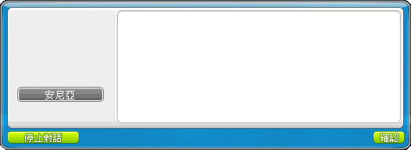

RB星力衝星工具

祝你衝星愉快!
星力7折
5、10、15星必過
15星以下不爆 10星以下1+1
自動防爆 20星以下只使用楓幣防爆
防爆
使用點數
從哪星開始：
目標星數：
P.S.
1.請不要嘗試衝到25星，有可能會跑不出結果
2.若不防爆衝22星以上，會跑很久需要等一下
3.如果有測出什麼BUG可以跟會長反應
15星以下不爆 10星以下1+1
自動防爆 20星以下只使用楓幣防爆
防爆
使用點數
需要金額：41000
裝備等級：從哪星開始：
目標星數：
成功機率：95%
已衝次數：0
失敗次數：0
破壞次數：0
已花費楓幣：0
已花費楓點：0
亂數：
| 強化階段 | 成功機率 | 破壞機率 | 失敗時 下滑機率 |
失敗時 維持機率 |
| 0＞1 | 95 | 0 | 0 | 5 |
| 1＞2 | 90 | 0 | 0 | 10 |
| 2＞3 | 85 | 0 | 0 | 15 |
| 3＞4 | 85 | 0 | 0 | 15 |
| 4＞5 | 80 | 0 | 0 | 20 |
| 5＞6 | 75 | 0 | 0 | 25 |
| 6＞7 | 70 | 0 | 0 | 30 |
| 7＞8 | 65 | 0 | 0 | 35 |
| 8＞9 | 60 | 0 | 0 | 40 |
| 9＞10 | 55 | 0 | 0 | 45 |
| 10＞11 | 50 | 0 | 0 | 50 |
| 11＞12 | 45 | 0 | 55 | 0 |
| 12＞13 | 40 | 6 | 54 | 0 |
| 13＞14 | 35 | 13 | 52 | 0 |
| 14＞15 | 30 | 14 | 56 | 0 |
| 15＞16 | 30 | 21 | 0 | 49 |
| 16＞17 | 30 | 21 | 49 | 0 |
| 17＞18 | 30 | 21 | 49 | 0 |
| 18＞19 | 30 | 28 | 42 | 0 |
| 19＞20 | 30 | 28 | 42 | 0 |
| 20＞21 | 30 | 35 | 0 | 35 |
| 21＞22 | 30 | 35 | 35 | 0 |
| 22＞23 | 3 | 58.2 | 38.8 | 0 |
| 23＞24 | 2 | 58.8 | 39.2 | 0 |
| 24＞25 | 1 | 59.4 | 39.6 | 0 |
1.請不要嘗試衝到25星，有可能會跑不出結果
2.若不防爆衝22星以上，會跑很久需要等一下
3.如果有測出什麼BUG可以跟會長反應